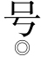

亚丹兄：
十月廿八日信收到。你的大女儿的病，我看是很难得好的，不过只能医一下，以尽人力。
我也以为兄在平，教一点书好，[306]对学生讲义时，你的朋友的话是对的，他们久居北京，比较的知道情形，有经验。青年思想简单，不知道环境之可怕，只要一时听得畅快，说得畅快，而实际上却是大大的得不偿失。这种情形我亲历了好几回了，事前他们不相信，事后信亦来不及。而很激烈的青年，一遭压迫，即一变而为侦探的也有，我在这里就认识几个，常怕被他们碰见。兄还是不要为热情所驱策的好罢。
《安得伦》[307]我这里有，日内当寄上三四本，兄自看外，可以送人。《四十一》的后记[308]曾在《萌芽》上登过，我本来有，但因搬来搬去，找不到了。《铁流》序[309]早收到，暂时无处可以发表。
日内又要查禁左倾书籍，杭州的开明分店被封[310]了，沪书店吓得像小鬼一样，纷纷匿书。这是一种新政策[311]，我会受经济上的压迫也说不定。不过我有准备，半年总可以支持的，到那时再看。现正在出资印《被解放的吉诃德》，这么一来，一定又要折本了。
木刻[312]望即寄下，因为弟亦先睹为快也。可买白纸数张，裁开，将木刻夹入，和报纸及封面之硬纸一同卷实（硬纸当于寄《安得伦》时一并附上，又《两地书》一本，以赠兄），

寄书店转弟收，可无虑。关于作者之材料[313]，暇时希译示，因为无论如何，木刻是必当翻印的，中国及日本，皆少见此种木刻也。此复即颂时绥。
弟豫顿首十月卅一夜。
令夫人均此致候。
注 释
[306] 当时收信人任北平大学女子文理学院、中国大学等校讲师。
[307] 《安得伦》 即《不走正路的安得伦》，参看320911①信注〔11〕。
[308] 《四十一》的后记 即《〈第四十一〉后序》，曹靖华作，载《萌芽》第一卷第二期（1930年2月）。
[309] 《铁流》序 即《序中译本〈铁流〉》，绥拉菲摩维支作，曹靖华译，《铁流》初版时未编入，以后各版均收入。
[310] 杭州开明分店被封 上海《出版消息》第二十三期（1933年11月1日）载：“闻开明书店杭州分店已于本月（按指十月）二十六日被封。”
[311] 新政策 1933年10月下旬蒋介石命国民党政府内政部警政司通令查禁普罗文艺，10月30日，国民党政府行政院发出第四八四一号密令，全面查禁普罗文学书刊等。
[312] 木刻 指鲁迅托曹靖华在苏联搜集的原版手拓木刻等，参看320423①信注〔7〕。
[313] 材料 指苏联木刻家的传略材料。